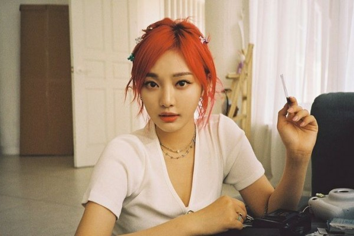

- Setiap Manusia memiliki keyakinan dan kemampuan untuk melaksanakan impian-impiannya yang sudah dia rencanakan sejak jauh hari. Impian orang berkembang seiring kebutuhan dan realitas yang dihadapinya. Dia sadar bahwa dengan ketekunannya dalam tujuan itu dapat berbuah impian yang diinginkannya. Tidak perduli seberapa besar atau kecilnya mimpi kita, semuanya ditentukan oleh faktor kuatnya keinginan.Manusia hidup di dunia ini haruslah mempunyai tujuan. Manusia yang tidak memiliki itu semua akan bingung menjalani hidupnya.
- Impian bagiku mempunyai arti harapan seseorang akan masa depannya, impian mempunyai arti yang berbeda bagi setiap orang, banyak yang beranggapan impian adalah sebuah mimpi yang sangat sulit diraih, sebetulnya hal tersebut tidak keseluruhan benar, karena sebuah impian pasti bisa diraih apabila kita berusaha dengan bersungguh-sungguh agar tercapai.Ada yang menganggap impian hanya mimpi belaka tetapi, ada juga orang yang menganggap sebagai tujuan hidupnya, mempunyai impian dapat memberikan semangat untuk terus melangkah maju untuk melaksanakan kehidupan ini sehingga bisa menjadi pengembangan diri. Tapi, kita pasti setuju bahwa menggapai impian di masa depan yang didamba-dambakan, tidak semudah menjetikkan kaki. Banyak rintangan yang harus dilewati.
- Impian saya sejak kecil adalah menjadi seorang penyanyi yang sukses. Saat saya masih kecil, saya sering mengikuti lomba-lomba ataupun audisi menyanyi seperti China Got Talent 2010 dan Let’s Sing Kids 1 2013, lalu mengikuti China Got Talent season 2 tahun 2011 dan mengikuti lagi Let’s Sing Kids season 3 di tahun 2015. Karena hal itu yang menjadikannya ingin menjadi idol atau penyanyi yang berbakat dan sukses.Setelah ia mengikuti audisi, ia ditawari oleh SM Entertaiment yaitu perusahaan terbesar dan terkenal di Korea Selatan. Akhirnya ia menerima tawaran tersebut dan ia di trainee selama 4 tahun di Korea dan pada tahun 2020 ia debut menjadi idol di Korea Selatan dan posisi dia di grup adalah sebagai vokalis utama.

